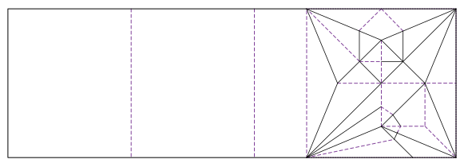
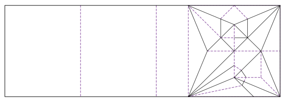

Macaw Card
 

A few years ago, I found this origami card. I really liked it, and folded tons of them as thank you cards for various events. However, after I had given everyone I knew two or three, I figured it was time to find a new card.
My google image searches didn't yield any similar cards, so I designed my own. This card is based on a macaw model I learned several years ago. I also designed a card with a traditional crane on it.
Diagrams are available here. The crease pattern is available here